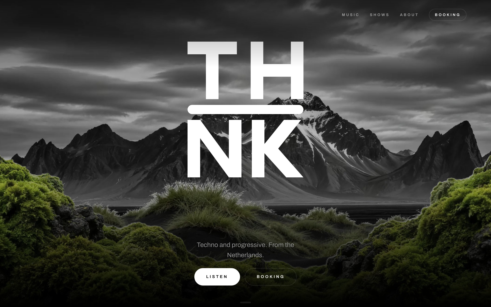
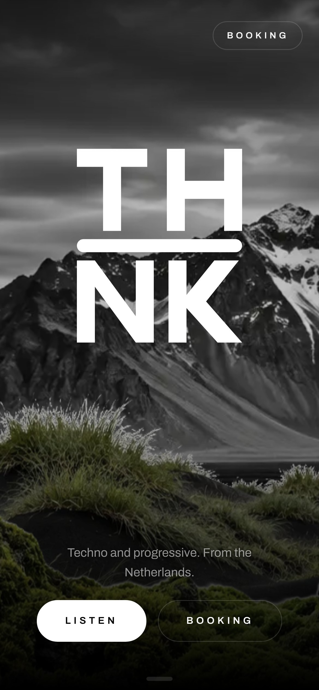
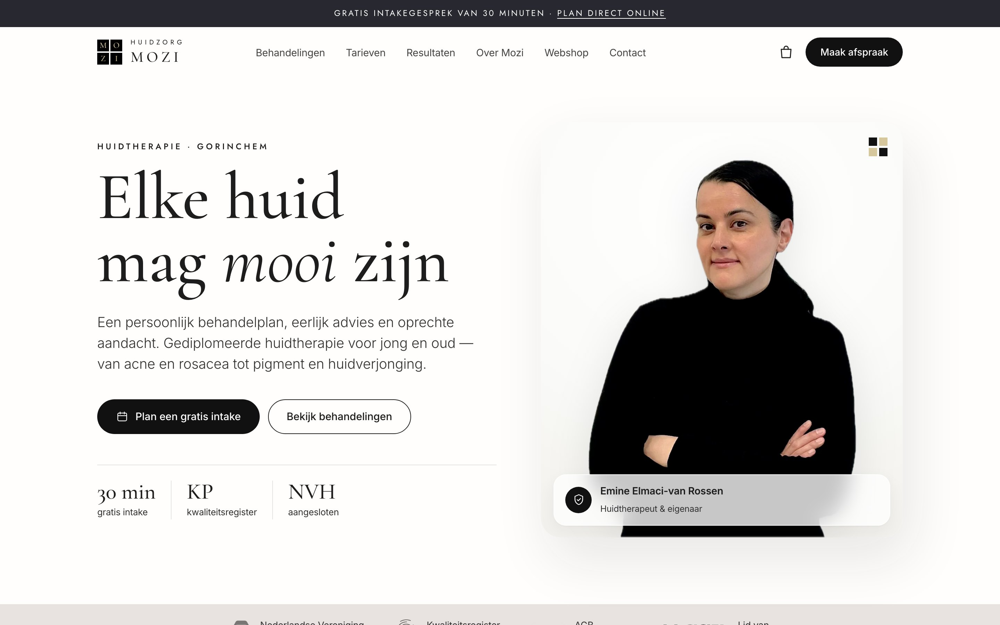
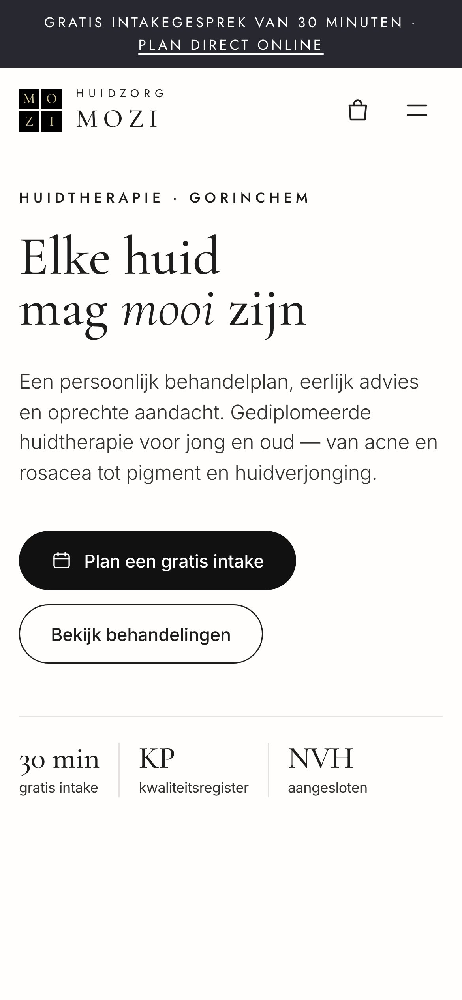
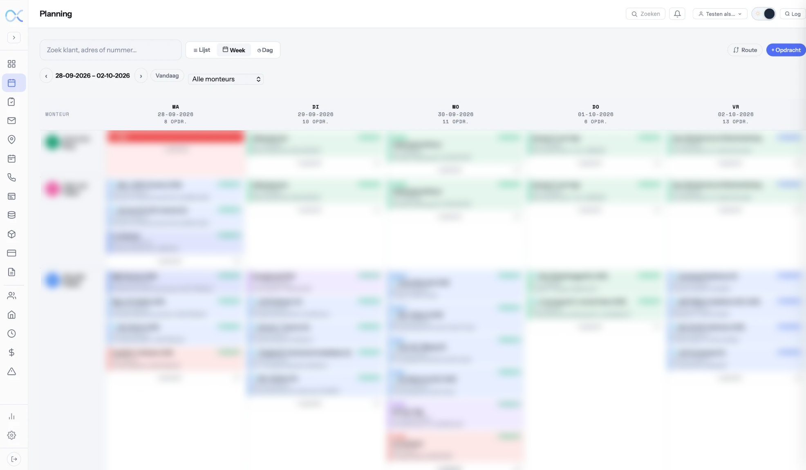

Websites die werken.
ViVo ontwerpt en bouwt snelle, heldere websites, webshops en webapps voor ondernemers die gevonden willen worden — en klanten willen overtuigen.
Bekijk ons werk

Eén aanspreekpunt, van eerste schets tot livegang. Persoonlijk, snel en zonder vakjargon — met een site die blijft werken.
Waar ViVo goed in is
Klik een dienst open voor meer uitleg.
01Websites
Je website is vaak de eerste indruk. ViVo ontwerpt en bouwt snelle, heldere sites die laten zien wie je bent — en die bezoekers laten doen wat jij wilt: bellen, mailen, boeken of kopen.
02Webshops
Een shop die overzichtelijk is, snel laadt en op elke telefoon prettig afrekent — als losse winkel of als onderdeel van je website.
03Webapplicaties
Als een website niet genoeg is: maatwerksoftware voor je bedrijf, zoals een planning, digitale werkbonnen of een klantportaal. Werkt in de browser én als app op je telefoon.
04Onderhoud & hosting
Hosting, updates en kleine aanpassingen. Jij onderneemt, ViVo houdt je site snel, veilig en actueel.
Recente projecten
Elk project krijgt zijn eigen kleur — net als de merken waarvoor ViVo bouwt.
THNK
Een donkere, grootse site voor techno- en progressive-dj en producer THNK.
Bekijk case

DELPHI Sleutelbeheersystemen
Een heldere, tweetalige productsite voor elektronisch sleutelbeheer.
Bekijk case

Huidzorg Mozi
Een warme, elegante website met webshop voor een praktijk voor huidtherapie.
Bekijk case
Flow8
Planning, digitale werkbonnen en klantbeheer voor de installatie- en servicebranche.
Bekijk caseZo werken we samen
Kennismaken
We bespreken je doelen, je klanten en wat je site moet opleveren.
Ontwerpen
Je ziet een klikbaar ontwerp voordat er één regel code geschreven is.
Bouwen
Snel, toegankelijk en vindbaar — getest op telefoon, tablet en desktop.
Lanceren
Live, en daarna blijft ViVo je aanspreekpunt voor onderhoud en groei.